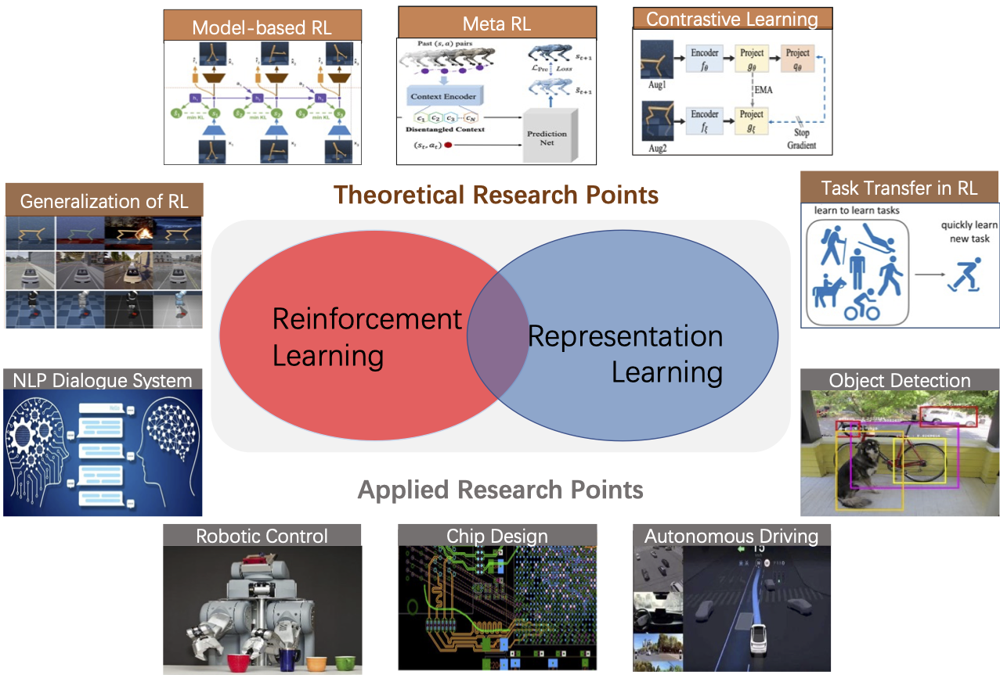

Ph.D. Candidate of Computer Science
The University of Hong Kong
Contact:
Department of Computer Science
The University of Hong Kong
Rm 301 Chow Yei Ching Building
Pokfulam, Hong Kong

Model-Based Reinforcement Learning via Imagination with Derived Memory
The 35th Conference on Neural Information Processing Systems (NeurIPS 2021), Poster.
Model-based reinforcement learning aims to improve the sample efficiency of policy learning by modeling the dynamics of the environment. Recently, the latent dynamics model is further developed to enable fast planning in a compact space. It summarizes the high-dimensional experiences of an agent, which mimics the memory function of humans. Learning policies via imagination with the latent model shows great potential for solving complex tasks. However, only considering memories from the true experiences in the process of imagination could limit its advantages. Inspired by the memory prosthesis proposed by neuroscientists, we present a novel model-based reinforcement learning framework called Imagining with Derived Memory (IDM). It enables the agent to learn policy from enriched diverse imagination with prediction-reliability weight, thus improving sample efficiency and policy robustness. Experiments on various high-dimensional visual control tasks in the DMControl benchmark demonstrate that IDM outperforms previous state-of-the-art methods in terms of policy robustness and further improves the sample efficiency of the model-based method.
CtrlFormer: Learning Transferable State Representation for Visual Control via Transformer
The 39th International Conference on Machine Learning (ICML2022), Spotlight.
Transformer has achieved great successes in learning vision and language representation, which is general across various downstream tasks. In visual control, learning transferable state representation that can transfer between different control tasks is important to reduce the training sample size. However, porting Transformer to sample-efficient visual control remains a challenging and unsolved problem. To this end, we propose a novel Control Transformer (CtrlFormer), possessing many appealing benefits that prior arts do not have. Firstly, CtrlFormer jointly learns self-attention mechanisms between visual tokens and policy tokens among different control tasks, where multitask representation can be learned and transferred without catastrophic forgetting. Secondly , we carefully design a contrastive reinforcement learning paradigm to train CtrlFormer, enabling it to achieve high sample efficiency, which is important in control problems. For example, in the DMControl benchmark, unlike recent advanced methods that failed by producing a zero score in the "Cartpole" task after transfer learning with 100k samples, CtrlFormer can achieve a state-of-the-art score 769 ±34 with only 100k samples, while maintaining the performance of previous tasks. The code and models are released in our project homepage.
Flow-based Recurrent Belief State Learning for POMDPs
The 39th International Conference on Machine Learning (ICML2022), Spotlight.
Partially Observable Markov Decision Process (POMDP) provides a principled and generic framework to model real world sequential decision making processes but yet remains unsolved, especially for high dimensional continuous space and unknown models. The main challenge lies in how to accurately obtain the belief state, which is the probability distribution over the unobservable environment states given historical information. Accurately calculating this belief state is a precondition for obtaining an optimal policy of POMDPs. Recent advances in deep learning techniques show great potential to learn good belief states. However, existing methods can only learn approximated distribution with limited flexibility. In this paper, we introduce the \textbf{F}l\textbf{O}w-based \textbf{R}ecurrent \textbf{BE}lief \textbf{S}tate model (FORBES), which incorporates normalizing flows into the variational inference to learn general continuous belief states for POMDPs. Furthermore, we show that the learned belief states can be plugged into downstream RL algorithms to improve performance. In experiments, we show that our methods successfully capture the complex belief states that enable multi-modal predictions as well as high quality reconstructions, and results on challenging visual-motor control tasks show that our method achieves superior performance and sample efficiency.
Scale-Equivalent Distillation for Semi-Supervised Object Detection
The IEEE Computer Vision and Pattern Recognition Conference (CVPR2022), Poster.
Recent Semi-Supervised Object Detection (SS-OD) methods are mainly based on self-training, ie, generating hard pseudo-labels by a teacher model on unlabeled data as supervisory signals. Although they achieved certain success, the limited labeled data in semi-supervised learning scales up the challenges of object detection. We analyze the challenges these methods meet with the empirical experiment results. We find that the massive False Negative samples and inferior localization precision lack consideration. Besides, the large variance of object sizes and class imbalance (ie, the extreme ratio between background and object) hinder the performance of prior arts. Further, we overcome these challenges by introducing a novel approach, Scale-Equivalent Distillation (SED), which is a simple yet effective end-to-end knowledge distillation framework robust to large object size variance and class imbalance. SED has several appealing benefits compared to the previous works.(1) SED imposes a consistency regularization to handle the large scale variance problem.(2) SED alleviates the noise problem from the False Negative samples and inferior localization precision.(3) A re-weighting strategy can implicitly screen the potential foreground regions of the unlabeled data to reduce the effect of class imbalance. Extensive experiments show that SED consistently outperforms the recent state-of-the-art methods on different datasets with significant margins. For example, it surpasses the supervised counterpart by more than 10 mAP when using 5% and 10% labeled data on MS-COCO.
Don't Touch What Matters: Task-Aware Lipschitz Data Augmentationfor Visual Reinforcement Learning
The 31st International Joint Conference on Artificial Intelligence (IJCAI 2022), Poster.
One of the key challenges in visual Reinforcement Learning (RL) is to learn policies that can generalize to unseen environments. Recently, data augmentation techniques aiming at enhancing data diversity have demonstrated proven performance in improving the generalization ability of learned policies. However, due to the sensitivity of RL training, naively applying data augmentation, which transforms each pixel in a task-agnostic manner, may suffer from instability and damage the sample efficiency, thus further exacerbating the generalization performance. At the heart of this phenomenon is the diverged action distribution and high-variance value estimation in the face of augmented images. To alleviate this issue, we propose Task-aware Lipschitz Data Augmentation (TLDA) for visual RL, which explicitly identifies the task-correlated pixels with large Lipschitz constants, and only augments the task-irrelevant pixels. To verify the effectiveness of TLDA, we conduct extensive experiments on DeepMind Control suite, CARLA and DeepMind Manipulation tasks, showing that TLDA improves both sample efficiency in training time and generalization in test time. It outperforms previous state-of-the-art methods across the 3 different visual control benchmarks.
Mixed Reinforcement Learning for Efficient Policy Optimization in Stochastic Environments
International Conference on Computer Applications in Shipbuilding (ICCAS), Student Best Paper Award, Oral Presentation.
Reinforcement learning has the potential to control stochastic nonlinear systems in optimal manners successfully. We propose a mixed reinforcement learning (mixed RL) algorithm by simultaneously using dual representations of environmental dynamics to search the optimal policy. The dual representation includes an empirical dynamic model and a set of state-action data. The former can embed the designer’s knowledge and reduce the difficulty of learning, and the latter can be used to compensate the model inaccuracy since it reflects the real system dynamics accurately. Such a design has the capability of improving both learning accuracy and training speed. In the mixed RL framework, the additive uncertainty of stochastic model is compensated by using explored state-action data via iterative Bayesian estimator (IBE). The optimal policy is then computed in an iterative way by alternating between policy …
Separated proportional-integral lagrangian for chance constrained reinforcement learning
2021 IEEE Intelligent Vehicles Symposium (IV), 193-199, Fianl list of Student Best Paper Award, Oral Presentation.
Safety is essential for reinforcement learning (RL) applied in real-world tasks like autonomous driving. Imposing chance constraints (or probabilistic constraints) is a suitable way to enhance RL safety under model uncertainty. Existing chance constrained RL methods like the penalty methods and the Lagrangian methods either exhibit periodic oscillations or learn an over-conservative or unsafe policy. In this paper, we address these shortcomings by elegantly combining these two methods and propose a separated proportional-integral Lagrangian (SPIL) algorithm. We first rewrite penalty methods as optimizing safe probability according to the proportional value of constraint violation, and Lagrangian methods as optimizing according to the integral value of the violation. Then we propose to add up both the integral and proportion values to optimize the policy, with an integral separation technique to limit the integral value within a reasonable range. Besides, the gradient of policy is computed in a model-based paradigm to accelerate training. The proposed method is proved to reduce oscillations and conservatism while ensuring safety by a car-following experiment.
Model-Based Actor-Critic with Chance Constraint for Stochastic System
2021 60th IEEE Conference on Decision and Control (CDC).
Safety is essential for reinforcement learning (RL) applied in real-world situations. Chance constraints are suitable to represent the safety requirements in stochastic systems. Previous chance constrained RL methods usually learn an either conservative or unsafe policy, and some of them also suffer from a low convergence rate. In this paper, we propose a model-based chance constrained actor-critic (CCAC) algorithm which can efficiently learn a safe and non-conservative policy. Different from existing methods that optimize a conservative lower bound, CCAC directly solves the original chance constrained problems, where the objective function and safe probability are simultaneously optimized with adaptive weights. In order to improve the convergence rate, CCAC utilizes the gradient of dynamic model to accelerate policy optimization. The effectiveness of CCAC is demonstrated by a stochastic car-following task. Experiments indicate that CCAC achieves good performance while guaranteeing safety, with a five times faster convergence rate compared with model-free RL methods. It also has 100 times higher online computation efficiency than traditional safety techniques such as stochastic model predictive control.
Model-Based Chance-Constrained Reinforcement Learning via Separated Proportional-Integral Lagrangian
IEEE Transactions on Neural Networks and Learning Systems,Impact Factor：10.451.
Safety is essential for reinforcement learning (RL) applied in the real world. Adding chance constraints (or probabilistic constraints) is a suitable way to enhance RL safety under uncertainty. Existing chance-constrained RL methods, such as the penalty methods and the Lagrangian methods, either exhibit periodic oscillations or learn an overconservative or unsafe policy. In this article, we address these shortcomings by proposing a separated proportional-integral Lagrangian (SPIL) algorithm. We first review the constrained policy optimization process from a feedback control perspective, which regards the penalty weight as the control input and the safe probability as the control output. Based on this, the penalty method is formulated as a proportional controller, and the Lagrangian method is formulated as an integral controller. We then unify them and present a proportional-integral Lagrangian method to get both their merits with an integral separation technique to limit the integral value to a reasonable range. To accelerate training, the gradient of safe probability is computed in a model-based manner. The convergence of the overall algorithm is analyzed. We demonstrate that our method can reduce the oscillations and conservatism of RL policy in a car-following simulation. To prove its practicality, we also apply our method to a real-world mobile robot navigation task, where our robot successfully avoids a moving obstacle with highly uncertain or even aggressive behaviors.